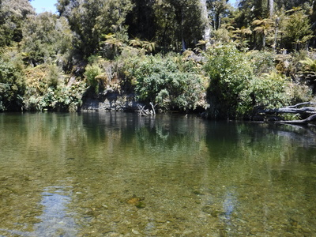
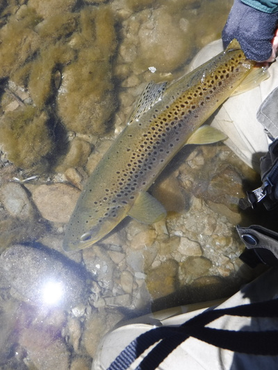
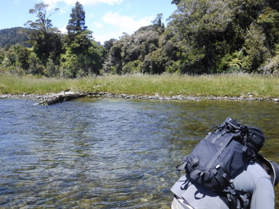
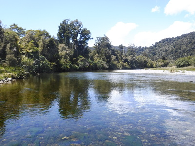
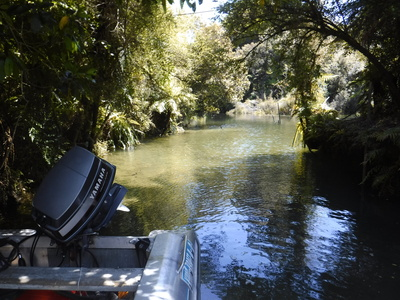

釣行日誌 ＮＺ編 「一期一会の旅：A Sentimental Journey」
１人で鱒を探して
11/25(SUN)-4
俺はビデオ機材を仕舞ってから後を追うからゴウは先に釣りながら行ってて、とディーンが言うので、デイパックを背負って再び鱒の姿を求めて遡行を始める。天気は良く光線の加減も良い。これなら僕でも鱒を発見出来るかも？と期待しつつ歩いて行くが、それらしい影は全く見当たらない。

川の中央に流木が横たわり、そのこちら側に深みが出来ていた。
『あそこは何となく怪しいな....』
と、まったくのブラインドフィッシングで勘を頼りにストリーマーを投げ込んで引いてみると、白いフライが暗緑色の深みから瀬に出てきたあたりで、全然鱒の姿は見えなかったがいきなりガツンとショックが来た。
「よしっ！！」
思った通りに出たのでしっかり合わせ、障害物の無い広い瀬の中でゆっくりと魚を寄せてくる。ディーンはまだ下流にいるので、水際ギリギリまで寄せてから尾っぽを掴んで自力のランディング。雌らしい顔つきの50cmクラスであった。

いささか「釣れちゃった」感のある１尾だったが、１人で釣りあげたので嬉しくなった。
やがてディーンが追いついて、２人は本流とスプリングクリークとの合流点に着いた。左から本流が勢い良く流れ込む淵の尻に流木が固まっており、その上流側を狙って見ろ、という指示のもと、何とか遠投してポイントにストリーマーを打ち込む。ロッドでアクションを付けると流木の下から大きな影が飛び出した。驚いて思わずストリッピングする右手が止まりそうだったがなんとか引き続けた。しかし、そいつは喰い付くには至らず、どこかへ姿を消した。
「あいつなら喰い気があるからもう１度！」
『ようし！』
再び同じ場所に投射し、弱ったホワイトベイトをイメージしてフライを操作しつつ深みを横切って引く。
『！』
また魚影が現れてフライを追ったが、今度も喰わない。
「まだ出るぞ。もう少し上流を狙ってみて。」
名ガイドの指示に従い、上流側へ落としてから少し沈め、右手でスッと引いた瞬間、ドカンっ！と重みがロッドに載った。
「ストライク！」
叫びつつロッドを立ててラインを手繰る。下手の流木に逃げ込まれないよう、太いティペットを頼りにやや強引にこちら側へと引っぱる。黄金色の魚体が流心の暗がりの中で反転し、ギラリと輝いた瞬間、フッと重さが消えた。
「あぁ～っ！」
惜しくもバラしてしまった。今回の釣行で２尾目のバラシであった。８年前と思えばバラシは大幅に少なくなったのだが、今の１尾はキャッチしたかった。ああ、無念！
気を取り直して、昨日爆釣した倒木の瀬にやって来た。打って変わって今日は快晴だったが、同じポイントを同じ流し方でホワイトベイトパターンを引くと、今日も40cm級が２尾連続してヒットした。

時刻は午後２時半を過ぎていた。ディーンが今日は天気が良いから海岸を撮影しに行こうというので、釣りは切り上げて下流へ戻り、また森の中の小径を辿ってトラックに戻ることにした。振り返ると、数々の思い出を与えてくれた川が静かに流れていた。これで今回のサウス・ウェストランド釣行は終わりを告げた。

40分ほど歩いて車まで戻り、ディーンがボートを支流に入れ、撮影機材を船に運び入れる。

釣行日誌ＮＺ編 目次へ
サイトマップ
ホームへ
お問い合わせ